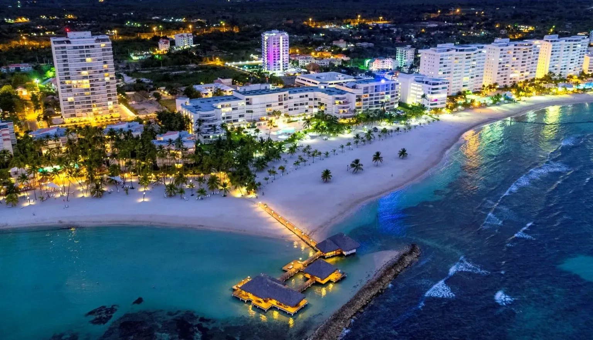

Discover the Dominican Republic
Beaches, culture, and food.
Beaches
Relax in Punta Cana and enjoy beautiful caribbean views. Going to a place where you can forget about your problems for a day, is the ideal place to visit. Be around entusiastic people with good energy and motivation.
Culture
Dominican people are into Music, dance, tablegames. Here you going to find the most motivated music that is going to make you enjoy your day and you going to want to come back as soon as posible. For the people the music and the dance is more, dominican take this very seriosly because is part of us to be dinamic and funny people that enjoy the life like is the last day. These are some of the most outstanding cualities of dominican. Table games are other things, Dominican are very competitives when is about games, you going to think that they are fiting but not, thats the funny part.
Food
Mangú, sancocho, Asopao. These are some of the most outstanding. Most of the dominican foods come from histoty also, Dominican Republic have a lot of population that doesn't have the resources to buy or make food sometimes so from there the people with low resorces have create the most delicios plates that we have. I am very sure that every place have a story behind. When you visit Dom.Rep and learn about our histoty behing each plate, each beach is very educated and intersting to learn how and why that was created.